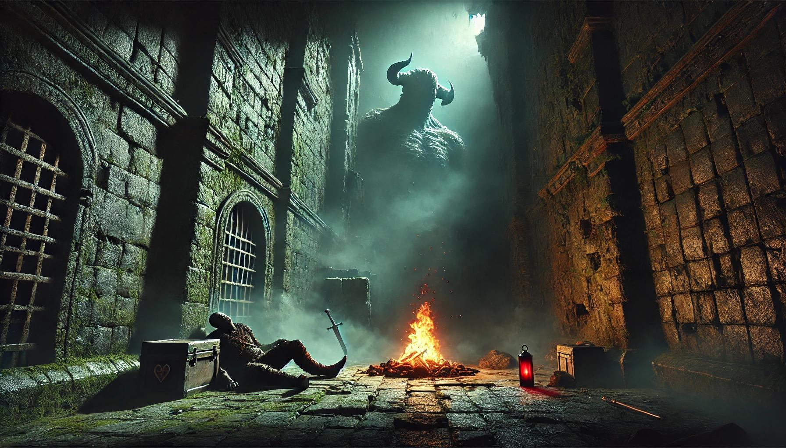

Interactive Fiction using Inform 7
Explore the world of interactive fiction with this project created using Inform 7. Extended using ChatGPT.
DS was created with Inform and has IFID F38191AA-5DDC-40FD-A7E8-64A11EFFC27B. To play a work like this one, you need an interpreter program: many are available, among them Gargoyle for MacOS, Linux or Windows; Spatterlight for MacOS; Windows Frotz or Windows Glulxe for Windows. Or you can play without downloading anything by following the 'Play In-Browser' link, using the Quixe interpreter. You'll need to have Javascript enabled on your web browser.
Play NowSource text: source.txt
Story file: DS.gblorb